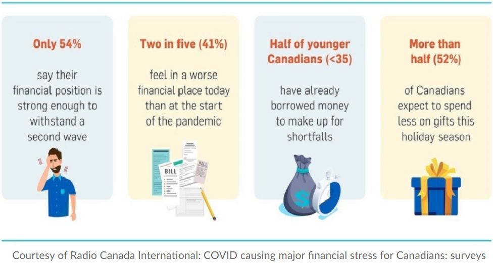
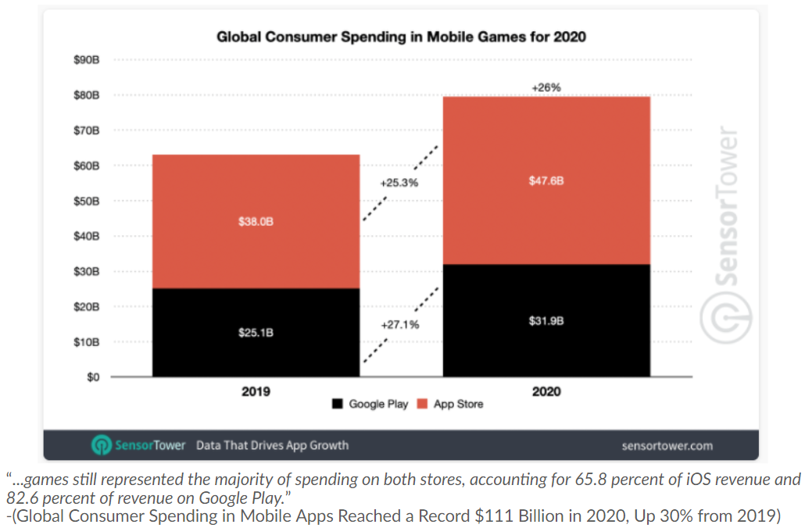

Spend2Save
Saving Money, Gamified!
Timeline:
February 18-21 2021 (36 Hours)
February 18-21 2021 (36 Hours)
Team:
Bianca Pokhrel, Isaac Casey, JJ Kanu (Me!), Warren Chu
Bianca Pokhrel, Isaac Casey, JJ Kanu (Me!), Warren Chu
Tools:
Flutter, Andriod SDK, UXPin
Flutter, Andriod SDK, UXPin
Overview
Spend2Save is an interactive prototype of a mobile app that gamifies the money saving experience. It was created as part of UofTHacks VIII, where it won the RBC challenge: 'In the economy of freelance work, what solution can help students strategically save towards an emergency fund without feeling overwhelmed?'
My Role
Given that we were all learning a new framework together, I took part in a bit of everything over the course of the project. Specifically, the sign-in/log-in screens and the store pages were the parts of the project I was most responsible for.
Why Spend2Save?
At the time of the hackathon, Toronto was once again going into lockdown. When we thought about this as a team, we realized that the feeling of putting a set amount of money away every time income rolls through, may create feelings of dread rather than positivity.
We wanted to create a positive association towards investing in an emergency fund by pairing it with a huge market of users who purchase in-app game rewards.
We wanted to create a positive association towards investing in an emergency fund by pairing it with a huge market of users who purchase in-app game rewards.

According to information on Gaming Monetization on Statista.com, 2020 alone saw a mobile game market worth over 77 billion dollars, a majority of it which can be directly attributed to consumer spending in mobile games.
In the world of freelance work, it is more important than ever to create educational and effective tools to aid consumers in becoming financially secure. Spend2Save aims to direct the impulse to spend money on these in-game rewards towards investing in an emergency fund.
In the world of freelance work, it is more important than ever to create educational and effective tools to aid consumers in becoming financially secure. Spend2Save aims to direct the impulse to spend money on these in-game rewards towards investing in an emergency fund.

Planning and Design
Who are our target users?
- Primary/Secondary(targeted end users/input and output system):
- Students and freelancers who use RBC as their main bank.
- Tertiary(others directly receiving benefits from system success or failure):
- RBC (it could encourage users of the app to open accounts)
- Facilitating(design, development, maintenance):
- RBC(would have to implement the system, the back-end servers and keep it updated)
Why is it important to them?
- Students and freelancers typically don’t have the same financial security as full time salary based employees. An emergency at the wrong time, during a time of low income, can cause plenty of financial aches especially if they haven’t set up an emergency fund.
- Having savings is important in case of emergency.
- People may have other savings goals such as a vacation or new car or even a down payment for a home. This can be another motivation.
Modeling Our Application
Society has seen huge trends in virtual avatars such as The Sims. These games are widely successful and they attract a demographic that have grown up playing them. We firmly believe that pairing this demographic with the age range that spends the most on in-app purchases creates a unique opportunity for our product to truly incentivize users to invest in an emergency fund through this game.
The aim of Spend2Save is to direct the impulse to spend money on in-game rewards towards saving money through virtual avatars. This is accomplished through gamifying the emergency fund saving experience to incentivize users to set aside amounts of money each paycheck to add to their emergency savings accounts. This app creates a visual manifestation for the amount saved for emergency use and allows users to “unlock” certain rewards for their in-game avatars through the transfer of funds to their emergency fund.
The app can be broken down into 3 main components.
The aim of Spend2Save is to direct the impulse to spend money on in-game rewards towards saving money through virtual avatars. This is accomplished through gamifying the emergency fund saving experience to incentivize users to set aside amounts of money each paycheck to add to their emergency savings accounts. This app creates a visual manifestation for the amount saved for emergency use and allows users to “unlock” certain rewards for their in-game avatars through the transfer of funds to their emergency fund.
The app can be broken down into 3 main components.
- The creation and customization of a user’s avatar
- The transferring of funds into a user’s “spending wallet” to unlock avatar skins, accessories, pets, etc.
- The storefront which allows users to browse through and “pay” for these rewards by transferring money from their “spending wallet” to their total savings fund.
Implementation
As learning a new skill was a major part of the hackathon, we used Flutter, a mobile development framework made by Google, to create our Spend2Save prototype. To create a mockup of our future, we used UXPin.

Check out the video demo for our project!
Want to see the work we did for yourself? Check out our GitHub repo here!
What I Learned
This was my first Hackathon so almost everything I did provided a learning experience. The skills needed to quickly plan and execute a project were put into practice and given opportunities to grow. Ways to improve efficiency and team efficacy can only be learned through experience in a fast-paced environment such as this one. With all of us having no prior mobile app development experience, anything we did was something new.